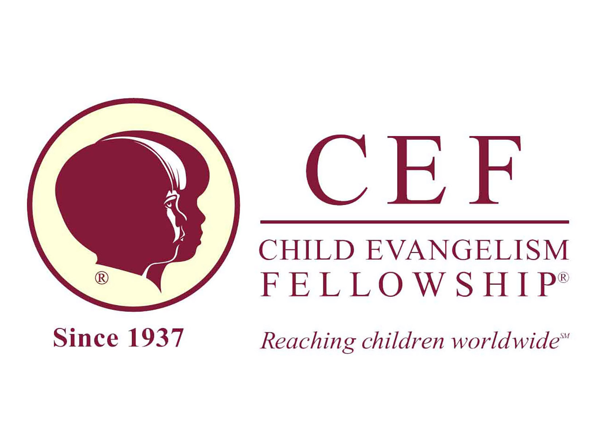

Christian Ministries and Organizations I Have Attended or Been Involved In





My Faith
[ Your personal faith statement goes here. Share what your faith means to you, how it shapes your life and work, and what drives your passion for serving others. ]
Christian Ministries and Organizations I Have Attended or Been Involved In
